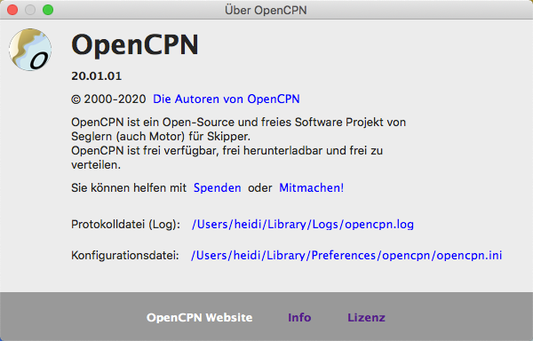

Installation
Nach der Installation von OpenCPN werden die Einstellungen für GPS/AIS, Karten-Verzeichnisse usw. vorgenommen. Siehe Einstellungen.
Speicherort wichtiger Dateien
OpenCPN enthält 2 wichtige Dateien - eine Logdatei "opencpn.log" und eine Konfigurationsdatei "opencpn.ini", die insbesondere bei Problemen angeschaut werden sollten. Bei Fragestellungen
in den Foren ist es hilfreich, diese Dateien bzw. Auszüge daraus mit anzugeben.
Unter Mac OS X befindet sich die Datei opencpn.log im Verzeichnis /Benutzer/Anwendername/Library/Logs/. Das "Home" Verzeichnis /Benutzer/Anwendername/ wird üblicherweise abgekürzt mit: ~/ und das oftmals unter Mac OS X versteckte Verzeichnis ~/Library kann man schnell erreichen, in dem man im Finder bei dem Menü "Gehe zu" die Alt-Taste gedrückt hält. Die Datei opencpn.ini ist im Verzeichnis /Benutzer/Anwendername/Library/Preferences/opencpn/ nach der Installation vorhanden. Dort sind auch alle weiteren Dateien die OpenCPN anlegt. Dazu gehören auch verschiedene Daten-Dateien von Plugins, die es neuerdings gibt.
Im Hilfe-Fenster, das man über das Symbol "Hilfe" der Werkzeugleiste erreicht, gibt es zwei Buttons, mit denen man den Inhalt der Konfig.-Datei oder der Logdatei in die Zwischenablage (Clipboard) kopieren und von dort weiter verwenden kann.

Wenn etwas nicht funktioniert
- Wurde OpenCPN erfolgreich installiert und es gibt später Probleme, ist das kein Grund für eine Neuinstallation. Das ist zwar eine gängige Vorgehensweise, hilft aber wenig.
- Prüfen Sie erst Ihre Logdatei und suchen darin nach Hinweisen.
- Im nächsten Schritt beenden Sie OpenCPN, wenn es noch läuft. Dann sichern Sie möglichst alle Daten. Siehe dazu Backup von Navigationsdaten.
- Weiter mit Umbenennen der Konfigurationsdatei opencpn.ini in z.B. opencpn_alt.ini. Wird OpenCPN neu gestartet, wird eine neue Konfigurationsdatei erzeugt wie bei einer Neuinstallation ohne Kartenverzeichnisse und den Standard Einstellungen.
- Gibt es immer noch Probleme insbesondere mit Meldungen über Ihre navobj.xml Daten im Log, dann schließen Sie OpenCPN und verschieben Sie alle navobj.xml Dateien in ein anderes Verzeichnis, benennen Sie opencpn.ini wieder um und starten Sie erneut. Ist das erfolgreich, dann schließen Sie wieder und versuchen Sie zunächst, navobj.xml.1 zurück zum Original Verzeichnis zu kopieren und in navobj.xml umzubenennen. Schlägt das fehl, machen Sie das mit navobj.xml.2 usw. Diese Schritte sind nur nötig, wenn Sie wertvolle und nicht anderswo gesicherte Daten haben.
- War das erfolgreich, posten Sie bitte Ihre alte Konfigurationsdatei, die originale navobj.xml und allen Informationen über das Geschehen mit Angabe Ihres Betriebssystems in das CruisersForum. Diese Anlagen müssen dort die Endung ".doc" haben. Die Entwickler werden sich dann um den Fall kümmern.
- Hilfe erhalten Sie auch in der OpenCPN Ecke im Segeln-Forum.